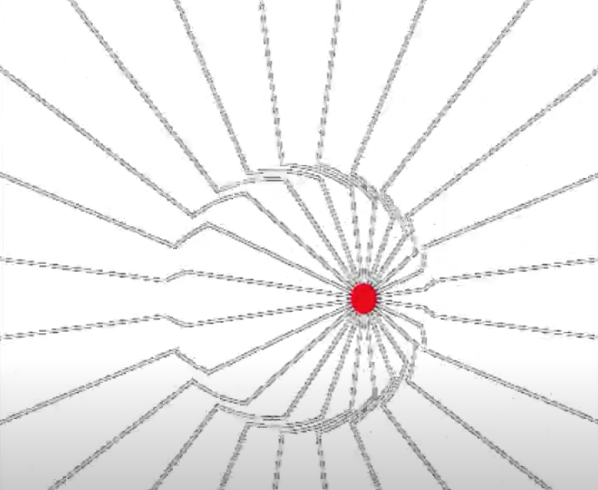
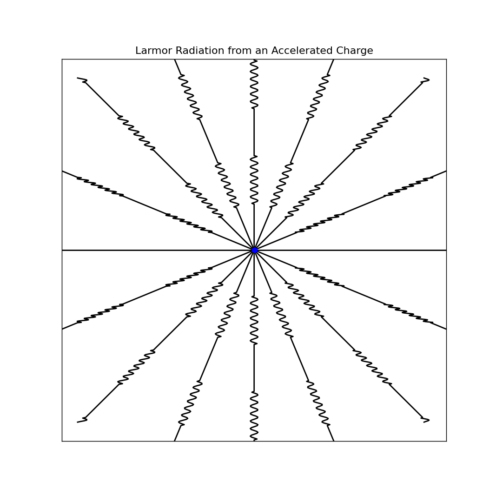

Maxwell’s Equations and the Larmor Formula
Contents
Maxwell’s Equations and the Larmor Formula¶
Electromagnetic Plane Waves¶
We can thus derive the wave equation from these assuming free space (no \(\rho\) and no \(\vec{J}\). Use the identity:
We then exchange order of partials on \(\vec{B}\). We also assume free space, so it simplifies:
We now will solve this by assuming that the solution is sinusoidal.
We then assume that the wave changes sinusoidally in the z direction and has a constant value in \((x,y)\). This gives a solution of the form:
We can plug this into the wave equation, and we find that \(\boxed{k = \omega \sqrt{\mu_0 \epsilon_0}}\). The assumptions that we are making here are that \(\varepsilon_0\) and \(\mu_0\) do not vary, that there is no movable charge around, that the material is not conductive, the wave moves in the z-direction, and the \(\vec{E}\) field is in \((x,y)\) and has the same amplitude.
General form:
This is a plane wave solution in \(\vec{k}\) direction. there is some constant value in the \(\vec{E}\) field, but that point changes in space and time. We can simplify to just \(z\).
So why are plane waves useful? Far away from sources, it is a fair approximation to say it is a plane wave. Additionally, superposition holds for plane waves. Nearly any waveform in space or time can be made up by summing enough plane waves (Fourier theory!). Note here plane waves obviously have amplitude and phase, and there are ways to relate space and time for the group and phase velocities. Plane wave solutions also have the fields perpendicular to each other.
Note we can define a quantity that tells us the relationship between the E&M fields in free space
Also, more generally:
Energy Density of Electric Field¶
Consider a p-p capacitor. For one plate,
One plate exerts a force on the other, and those does work! The work \(W = \Delta U = F\Delta s\). This energy per unit volume is thus is thus:
We could also derive this with dimensional analysis and Maxwell’s equations. Check the dimensions of \(E\) and \(V\) Electric field squared gives energy density. Same with the magnetic field. Same with the product. But dimensional analysis does not tell us which one is correct. We need more information.
We can write down a continuity equation for the energy density from Maxwell’s equations. We end up getting:
Using the Poynting vector, we then get the energy density of the electromagnetic field in CGS units:
Also, we can get the energy density of the magnetic field, and the total energy in terms of only \(E\) or \(B\):
Larmor Formula¶
This equations describes the power radiated from an accelerated charge. Come back and fill in the details.
Special relativity tells us that charges moving at constant velocity do not have oscillations or radiation. We must have acceleration. The main idea of the derivation is that an acceleration cause a necessary ``jump’’ in the electric field in a shell. We must connect this disturbance. We then have a plane wave moving outward, and have a photon (Figure above).
What is the power radiated in that shell? We need to find the perpendicular and radial components of the \(E\) field in that region. This gives us the slope of the \(E\) field there.
We also know:
We can use the energy density in the EM field, and we also know that \(E^2 = B^2\). Therefore,
The energy is thus:
We then get:
This is the Larmor formula. This is the total power radiated from an accelerating charge. Remember that power not isotropic and we also said nothing about the frequency of the plane wave. This is because the spectrum of the emission depends on the time variation of the emission. We do not know what the energy in each photon is, but only the total power radiated.
Interestingly, one can derive the Larmor formula another way as well. Consider a charge \(q\) oscillating within a one dimensional quantum harmonic oscillator (characterized by oscillator frequency \(\omega\)). Further suppose that the charge starts out in an energy eigenstate \(|n\rangle\) of the oscillator, and decays by spontaneous emission to \(|m\rangle\). The timescale for decay is set by the Einstein A coefficient:
where \(\alpha \equiv q\langle n | x | m \rangle\). This matrix element can be calculated trivially using the raising and lowering operators for the SHO,. Further note that that \(m = n-1\) (we’re talking about \textit{decay}), so we have:
The energy levels of the SHO are \(E_n = (n+\frac{1}{2})\hbar\omega\). Therefore, the frequency of the emitted photon as the system decays is:
So, the emitted photon has a frequency which is equal to the oscillation frequency of the system! We can also calculate the lifetime of the state, \(\tau \sim 1/A\):
The \textit{power} carried away is just the energy carried away divided by this timescale, i.e.:
Dropping the \(\frac{1}{2}\hbar\omega\) (this is the classical limit, \(\hbar \rightarrow 0\)), and using the fact that \(E = \frac{1}{2}kx^2 = \frac{1}{2}m\omega^2x^2_0\), we have:
Finally, we note that for a harmonic oscillator, differentiating \(x(t)\) twice and time averaging gives us an acceleration \(\langle a^2 \rangle = x_0\omega^2/2\). So, our expression above is just:
which is exactly the classical Larmor formula!
The Fourier Transform¶
The Fourier Transform changes something from time domain to frequency domain and back again (using the inverse FT).
We can express any signal as a sum of sine waves with some frequency and amplitude. The Fourier transform takes in the signal and outputs the amplitude as a function of \(\omega\). You get both a real and imaginary part, too, for both the amplitude of the cosine and sine terms in the Fourier expansion.
Takeaways¶
Maxwell’s equations tell us about the \(E\) and \(B\) field dynamics. \(E\) and \(B\) fields propagate perpendicular to each other and the direction of propagation (Poynting flux).
Accelerating electric charges causes radiation. We can describe the average power (not isotropic, agnostic to frequency of radiation) carried away from the accelerated charge with the Larmor formula:
Larmor Supplement¶
Here’s an additional bit of information Larmor Radiation, with a link to a simulation notebook: here.
This interactive simulation illustrates how, in the non-relativistic regime, accelerating a charged particle at a characteristic frequency launches oscillations in the electric field that propagate outward as an electromagnetic wave.
The power radiated by an accelerated charge (integrating over all angles) follows the Larmor formula:
where is the charge of the particle, is the magnitude of the acceleration, and is the speed of light.
However, as the simulation shows, more power is radiated in directions perpendicular to the axis of acceleration. This effect can be understood as the projection of the acceleration perpendicular to the field line connecting the charge to the observer. The Poynting Flux for any chosen direction is given by:
where and are the electric and magnetic fields, respectively, is the angle of the chosen direction relative to the axis of the acceleration vector , and is our distance from the radiating charge.
Because the acceleration dictates the axis along which the electric field is perturbed, Larmor radiation is generally polarized, though if an ensemble of charged particles experience accelerations in different directions, the ensemble averaged radiation may be depolarized.
